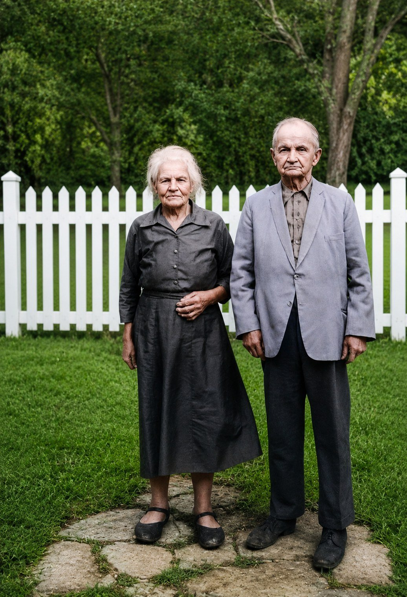
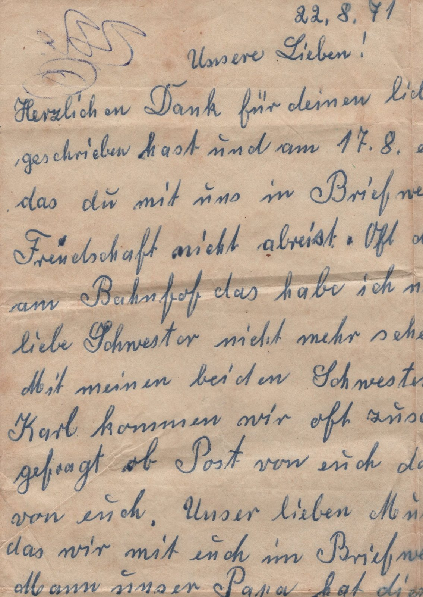

Teil II · Der Dampfer Formosa und der Urwald
Kapitel 7 — Das Radio im Keller und die Kisten des Friedens (1939–1973)
Eine Station, die verstummt, löscht das Wetter nicht aus, das gewesen ist. Sie hört nur auf, davon zu erzählen.
27,4° S · 49,6° W, Ituporanga, SC · 27,3° S · 49,6° W, Aurora, SC
Während des Krieges hörte man das Radio im Haus unten im Keller, „immer mit einem Enkel, der Wache hielt“, und der Fata hatte die Flinte geladen und griffbereit. Wovor fürchtete sich ein Mann, der Gipsengel für die Friedhöfe der Siedler formte?
Auf den alten synoptischen Wetterkarten, die ich meinen Studenten manchmal zeige, gibt es einen Mangel, den beim ersten Hinsehen niemand bemerkt. Man muss langsam schauen. An bestimmten Tagen der Kriegsjahre bleiben ganze Regionen der Karte weiß. Nicht dass es dort keinen Wind oder keinen Regen gegeben hätte: Es regnete, es wehte, die Fronten zogen durch, wie sie es immer getan haben. Nur hatten die Stationen aufgehört zu senden. Die Beobachter waren eingezogen worden, oder die Leitungen waren gekappt, oder die Meldungen waren zum militärischen Geheimnis geworden, weil das Wissen um das Wetter von morgen über dem Nordatlantik Schiffe wert war. Wer das Klima jener Jahre mit den heutigen Reanalysen rekonstruiert, arbeitet mit diesen Löchern. Er weiß, dass das Wetter in ihnen weiterging, und muss es von den Rändern her erraten.
Die Geschichte der Familie hat zwischen 1939 und 1945 ein solches Loch. Sechs Jahre lang sendete die Station Haas nicht mehr nach draußen. Auf der Straße sprach man kein Deutsch, man schrieb nicht nach Bayern, man sagte nicht laut, was man im Radio gehört hatte. Was ich über diese Jahre weiß, kam über einen einzigen Kanal zu mir: den Text, den Marise Haas Lourenço 2013 zur Hundertjahrfeier vorlas und den sie aus den Erinnerungen derer zusammengesetzt hatte, die jene Zeit erlebt hatten. Das ist wenig, aber viel mehr als das Schweigen, das mein Vater Baldoíno sein Leben lang über diese Dinge bewahrte. Dieses Kapitel versucht, jenes Schweigen von den Rändern her zu lesen.
Das Radio im Keller
Ituporanga, Alto Vale do Itajaí, eine Nacht im Jahr 1942 oder 1943
Ich stelle mir vor, dass es Nacht war, denn nachts kommt die Kurzwelle am besten an. Das ist keine Erinnerung von irgendwem, das ist Physik: Nach Sonnenuntergang löst sich die unterste Schicht der Ionosphäre auf, und das Signal aus Europa springt mit geringeren Verlusten zwischen Himmel und Meer hin und her, Sprung um Sprung, bis es in einem Tal im Inneren von Santa Catarina niedergeht. Ein Mann von 58 Jahren mit den Händen eines Stuckateurs steigt mit einer Petroleumlampe die Kellertreppe hinunter und schaltet ein Gerät ein, das ein paar Sekunden braucht, bis die Röhren warm sind. Zuerst kommt das Rauschen, dann eine Stimme auf Deutsch, weit weg, mal lauter, mal leiser, als spräche jemand aus einem Brunnen.
Draußen an der Straße steht ein Junge Wache. Der Text der Hundertjahrfeier ist in diesem Punkt eindeutig: Das Radio, das die Nachrichten aus der alten Heimat brachte, hörte man im Keller, „immer mit einem Enkel, der Wache hielt“, damit kein Fremder in der Nähe war. Ich denke oft an diesen Jungen. Die ältesten Enkel von Johann und Maria waren in jenen Jahren Kinder oder kaum mehr. Gertrudes, die erste in Brasilien geborene Tochter, war selbst gerade erst um die dreißig. Ein Kind im Dunkeln an die Straße zu stellen, mit dem Auftrag, Bescheid zu geben, wenn jemand kam, sagt viel darüber, wie groß die Angst in diesem Haus war. Es sagt auch, dass die Angst weitergegeben wurde, wie man ein Handwerk weitergibt: früh und ohne Erklärungen.
Ich weiß nicht, in welchem Haus dieser Keller war. Die Familie wohnte damals in Ituporanga, und am wahrscheinlichsten ist das Haus in Águas Negras, wohin sie wegen der Schule der Kinder gezogen waren. Ich weiß auch nicht, was für ein Gerät es war und welchen Sender sie einstellten. Ich weiß, dass Johann schon immer Zeitung las. Marises Text erzählt, dass die Familie Zeitungen abonniert hatte, vor allem aus der Gegend von Blumenau, und die aus Deutschland mitgebrachten Bücher aufbewahrte. Es waren Leute, die von der Welt wissen wollten. 1942 war es zu einer Sache für den Keller geworden, in dieser Sprache von der Welt wissen zu wollen.
Die Szene hat eine zweite Figur, die der Text neben das Radio stellt. Im Wissen um die Nachrichten, die umgingen, „zögerte“ der Fata „nicht, seine Flinte zu laden und griffbereit zu halten“, um die Familie zu schützen. Es ist ein Satz aus wenigen Worten, und ich lese ihn, wie man ein Seismogramm liest. Johann Haas war der Spaßmacher der Familie, der Geschichtenerzähler nach ein paar Bier, der Mann, der Gipsengel für die Friedhöfe der Siedler formte. Und es gab eine Zeit, in der er mit einer geladenen Waffe neben dem Bett schlief, in einem Land, das er sich ausgesucht hatte, in das er seine Frau gebracht und in dem er zwei Kinder begraben hatte.
Die Überfahrt, die nicht stattfand
Ituporanga, 1939
Das Loch in der Karte beginnt ein wenig früher. 1939, so erzählt der Text der Hundertjahrfeier, wollte der Vater nach Deutschland zurück, und der Beginn des Zweiten Weltkriegs vereitelte den Versuch. Marise war so ehrlich hinzuzufügen, dass sich aus den verschiedenen Fassungen derer, die jenen Moment erlebt hatten, die Gründe und Umstände des Plans nicht ermitteln ließen. Niemand weiß, ob es ein Besuch oder eine endgültige Rückkehr sein sollte, ob eine Fahrkarte gekauft war oder nur ein Wunsch bei Tisch ausgesprochen.
An dieser Stelle wird die Liste der offenen Fragen dieses Buches länger, und ich habe gelernt, sie zu respektieren. Ich kann Hypothesen aufzählen, aber keine auswählen. 1939 war Johann 55 Jahre alt und seit 26 Jahren in Brasilien. Die Söhne arbeiteten schon als Maurer, die Bauten in Ituporanga hatten der Familie in der Stadt einen Namen gemacht, das Land in Águas Negras war bezahlt. Vielleicht wollte er seine Eltern wiedersehen, falls sie noch lebten, oder die Geschwister aus Sandberg, deren Namen ich erst 2018 erfahren sollte. Vielleicht wollte Maria Heumaden wiedersehen, ihre Schwestern, die Schwester, die 1914 geschrieben hatte, der Krieg habe begonnen und sie sollten nicht versuchen zurückzukommen. Vielleicht war es nur das Alter, das die Menschen an den Ort ihrer Geburt zurückzieht. Vielleicht sprach die Propaganda, die über Radio und Zeitungen kam, von einem Deutschland, das es nicht mehr gab. All das ist vielleicht. Die Tatsache ist nur eine: Im September 1939 begann in Europa der Krieg, und der Weg zurück, der schon vorher lang gewesen war, schloss sich.
Es gibt eine Symmetrie, die mich beunruhigt. 1914 schloss der Brief der Schwester der Mota die Tür zurück gleich nach der Ankunft. 1939 schloss ein anderer Krieg die Tür erneut, gerade als sie vielleicht offen schien. Es ist seltsam, das Glück zu nennen, aber von hier aus gesehen, mit dem, was wir über die Jahre 1939 bis 1945 in Europa wissen, hat die vereitelte Reise der Familie womöglich Schlimmeres erspart. Das konnten sie nicht wissen. Was sie 1939 hatten, war eine Enttäuschung und ein Land, das bald anfangen würde, ihnen zu misstrauen.
Die Sprache, die verstummte
Santa Catarina, 1938 bis 1945
Die Nationalisierungskampagne begann vor dem Krieg und nicht seinetwegen. Seit 1937, mit dem Estado Novo, der Diktatur von Getúlio Vargas, hatte die Regierung beschlossen, dass Brasilien die von Ausländern besiedelten Gebiete mit Gewalt „brasilianisieren“ müsse. In Santa Catarina entwickelte die Kampagne unter dem Interventor Nereu Ramos, dem von Vargas eingesetzten Statthalter, einen ganz eigenen Eifer. Ab 1938 schlossen oder verstaatlichten Dekrete die Gemeindeschulen, die auf Deutsch unterrichteten, verlangten gebürtig brasilianische Lehrer, stellten die Vereine, die Schützenvereine und die Chöre unter Aufsicht und brachten nach und nach die fremdsprachige Presse zum Schweigen. Für eine Familie wie die Haas, deren Kinder in die Schule gekommen waren und nur Deutsch sprachen, griff das in die Sprache ein, die man bei Tisch sprach.
Die ersten beiden Kriegsjahre, erinnert Marises Text, waren verhältnismäßig ruhig, weil Brasilien neutral blieb. Die Wende kam mit dem Bruch mit den Achsenmächten. Der Text der Familie legt den Bruch ins Jahr 1941. Die Geschichtsbücher legen ihn in den Januar 1942 und die Kriegserklärung in den August desselben Jahres, nachdem deutsche U-Boote vor der Küste brasilianische Schiffe versenkt hatten. Die Erinnerung staucht die Daten zusammen, wie sie alles zusammenstaucht, aber der Sinn ist derselbe. Von da an wurde es, so der Text, „gleichbedeutend mit Feind“, ein Einwanderer oder Nachfahre von Deutschen oder Italienern zu sein. Öffentlich Deutsch zu sprechen, konnte ins Gefängnis führen. In den Dörfern des Tals zeigten Nachbarn Nachbarn an, manchmal aus Angst, manchmal wegen Land, manchmal aus gar keinem Grund.
In diesem Klima kamen die Nachrichten ins Haus. Ich gebrauche dieses Wort mit Absicht, und der Leser möge mir die Beharrlichkeit verzeihen. Der Text der Hundertjahrfeier spricht von Nachrichten über Menschen, die auf Plätzen und Straßen körperlich gefoltert wurden, die man zwang, Öl und andere Flüssigkeiten zu schlucken, die man ihnen mit dem Gewehrlauf einflößte. Ich kann diese Vorfälle nicht überprüfen: Ich weiß nicht, wo sie sich zugetragen haben sollen, noch mit wem, noch wer sie zuerst erzählt hat.1 Was ich sagen kann, ist, dass diese Nachrichten die Familie erreichten, dass man ihnen glaubte und dass sie das Verhalten eines Mannes veränderten, der bis dahin nur Mauern hochgezogen hatte. Die Geschichtsschreibung Santa Catarinas verzeichnet Verhaftungen, öffentliche Demütigungen und Übergriffe während der Kampagne. Aber dieses Buch ist nicht der Ort, einen Bericht, der von Mund zu Mund ging, zur gesicherten Tatsache zu machen, und ich lasse ihn lieber so, wie er für sie war: ein Wind, der von weit her kam, ohne dass man wusste, woher, und der die Fenster schließen ließ.
Archivkarte: História de João e Maria Meyer Haas (Geschichte von João und Maria Meyer Haas), Text von Marise Haas Lourenço, vorgelesen zur Hundertjahrfeier der Ankunft am 30. März 2013 (Abschrift in livro/fontes/historia_joao_e_maria_marise_2013.txt). Es ist die einzige schriftliche Quelle über die Jahre 1939 bis 1945 in der Familie. Was sie festhält: den vereitelten Plan von 1939; das Ende der brasilianischen Neutralität, das der Text auf 1941 datiert (historisch Januar 1942); die Nachrichten über Folterungen, die die Familie erreichten; die griffbereite Flinte; das Radio im Keller mit einem Enkel als Wache; Deutsch nur noch zu Hause; die humanitäre Hilfe von 1945; den Verlust des Kontakts zu den Verwandten in Deutschland. Keiner dieser Punkte ist bislang durch ein unabhängiges Dokument bestätigt.
Was im Haus geschah, ist besser überliefert als das, was draußen geschah, und es war auch das, was länger anhielt. „Deutsch sprechen nur noch zu Hause, mit der Familie“, schreibt Marise. Und gleich danach kommt der Satz, der für mich meinen Vater erklärt: Aus Angst und Scham, „Deutsche“ zu sein, hörten viele auf, die Sprache zu sprechen, und das begleitete die neuen Generationen.
Baldoíno war 18, als Brasilien in den Krieg eintrat. Es war das Alter, in dem man eingezogen wird, in dem man auf der Straße angeschaut wird, in dem man etwas beweisen muss. Er lernte beim Vater das Maurerhandwerk, sprach Deutsch von der Wiege an und wuchs in einem Land auf, das ihn plötzlich wie einen Verdächtigen behandelte. In Kapitel 1 habe ich erzählt, dass er weder über den Krieg noch über die Sprache sprach. Jetzt weiß ich, oder glaube zu wissen, woher dieses Schweigen kam. Es war dieselbe Regel wie im Keller, ein ganzes Leben lang angewandt: Manches hört man leise und erzählt es draußen nicht weiter.
Marises Text beschreibt das Dilemma besser, als ich es könnte. Diese Menschen konnten sich von der Tradition und der Muttersprache nicht lösen und wollten es auch nicht. Zugleich wollten sie nicht mehr als Fremde angesehen werden, denn das waren sie nicht. Sie liebten Brasilien, zahlten Steuern, hielten die Gesetze ein, und je mehr das Land sie benachteiligte, desto schwerer fiel es ihnen, sich als Brasilianer zu fühlen. Johann Haas hatte die Hauptkirche von Ituporanga gebaut, das Pfarrhaus, das Franziskanerseminar, die Erweiterung des Schwesternkrankenhauses. Ich weiß nicht, ob einer der Männer, die in jenen Jahren die „Deutschen“ der Stadt misstrauisch beäugten, ohne es zu wissen unter einer Decke betete, die er geformt hatte. Wahrscheinlich ja.
Für mich ist die zum Schweigen gebrachte Sprache der längste Faden dieses Buches und der persönlichste. Er beginnt bei der Mota, die nie Portugiesisch lernte. Er führt durch den Keller von 1942 und durch das Schweigen meines Vaters. Er kommt bei mir an, der ich 2018 Geduld, ein Wörterbuch und Hilfe brauchte, um die deutsche Schrift zu lesen, mit der ein bayerischer Standesbeamter die Geburt meines Großvaters eingetragen hatte. In drei Generationen wurde aus der Sprache des Hauses eine Sprache des Archivs. Die Nationalisierungskampagne hat das nicht allein bewirkt, denn Einwanderersprachen gehen auch von selbst verloren, mit der Zeit, den Heiraten und der Schule. Aber sie hat den Verlust beschleunigt und ihn schmerzhaft gemacht.
Kleider für ein verwüstetes Land
Ituporanga, 1945 und danach
Der Krieg in Europa endete im Mai 1945. Deutschland war besiegt, in Besatzungszonen geteilt, die Städte lagen in Trümmern, und Millionen Menschen waren ohne Dach, ohne Essen und ohne Nachricht von irgendwem. Im Alto Vale do Itajaí wird die Meldung über das Radio gekommen sein und über die Zeitungen, die jetzt nur noch auf Portugiesisch erscheinen durften, und ich stelle mir vor, dass sie mit einer Mischung aufgenommen wurde, für die es kein Wort gibt: Erleichterung, Scham, Angst um die, die geblieben waren, Müdigkeit.
Der Text der Hundertjahrfeier erzählt, was João und Maria taten. Mit vielen Freunden zusammen schickten sie humanitäre Hilfe: Kleidung und haltbare Lebensmittel. In meinem Kopf nenne ich diese Sendungen die Kisten des Friedens. Der Name ist von mir, nicht von ihnen; ich weiß nicht, wie die Familie sie nannte, und ob sie sie überhaupt irgendwie nannte. Ich weiß auch nicht, auf welchem Weg sie gingen, ob über eine Pfarrei, einen Einwandererverein oder eine Hilfsorganisation, die im Süden Brasiliens Spenden sammelte und nach Europa verschiffte. Ich weiß, dass viele deutschbrasilianische Gemeinden das nach dem Krieg taten und dass die Sendungen denselben Ozean überquerten, den Johann und Maria überquert hatten, in der Gegenrichtung.
Der nächste Satz des Textes ist der traurigste des Kapitels. Da sie den Kontakt zu den Angehörigen, die drüben geblieben waren, völlig verloren hatten, „wenn sie denn überhaupt noch welche hatten“, war ihnen von der alten Heimat nur die Erinnerung geblieben. Das heißt, die Kisten hatten keinen Empfänger. Sie gingen nicht an die Schwester in Heumaden und nicht an die Geschwister in Sandberg, sondern an wen auch immer, der sie brauchte, namenlose Menschen in einem Land, das einmal ihres gewesen war. Ich kenne keine großzügigere und keine einsamere Geste: ein Paket für die eigene Familie zu packen, ohne zu wissen, ob es sie noch gibt, und es an ein ganzes Land zu schicken, in der Hoffnung, dass es ankommt.
Ich weiß nicht, ob je eine Antwort zurückkam. Diese Frage steht seit Beginn der Recherche auf meiner Liste und ist noch offen. Hätte es einen Brief gegeben, so wäre er, stelle ich mir vor, aufbewahrt und erinnert worden, und Marise hätte ihn erwähnt. Das Schweigen des Textes legt nahe, dass es keinen gab. Mehr als siebzig Jahre später, als ich mit dem Namen meines Großvaters auf einem Zettel das Standesamt von Maxhütte-Haidhof betrat, lieferte ich die letzte dieser Kisten ab.
Ribeirão das Pacas
Aurora, Alto Vale do Itajaí, 1950er und 1960er Jahre
Marise schreibt, dass die Wunden heilten und die Narben blieben und dass das Leben weiterging. Es ging weiter und zerstreute die Familie. Fernando, Gertrudes und Elza zogen mit ihren Familien nach Paraná, in einer weiteren der Wanderungswellen, die Söhne und Töchter catarinensischer Siedler in die neuen Gebiete im Norden und Westen jenes Bundesstaates führten. Agnes heiratete und zog nach Ribeirão das Pacas im Landkreis Aurora. Maria, die Jüngste, folgte der Schwester. Baldoíno heiratete 1947 Adelina Doerner und ging nach Vidal Ramos. Alexandre blieb als Einziger in Ituporanga, wo er an den größten Bauten der Stadt seine Spur hinterließ.
Blickt man auf die Karte, so wiederholt die Zerstreuung der Kinder im Kleinen die Geschichte der Familie selbst. Johann und Maria hatten Bayern verlassen, weil Land und Arbeit nicht für alle reichten. Die Kinder verließen Ituporanga zum Teil aus demselben Grund. Die ungeschriebene Regel der Kolonien im Süden lautete, dass ein Kind bei den Eltern blieb und die anderen anderswo Boden suchten, im Nachbartal, auf der Hochebene, im benachbarten Bundesstaat. Die Anthropologin Ellen Woortmann hat dieses Muster bei den Siedlern des Südens beschrieben, und in der Familie Haas findet es sich vollständig: ein Kind, das bleibt, die anderen, die gehen, ein Netz von Verwandten, das nicht zerreißt, sondern sich ausdehnt. Mehr als sechshundert Nachkommen, bei der Hundertjahrfeier 2013 über Brasilien und die Welt verstreut, nahmen dort ihren Anfang.
Auch Johann und Maria zogen im Alter noch um. Sie suchten Zuflucht in der Nähe der jüngsten Tochter und kauften neues Land in Ribeirão das Pacas, damit die Mota weiter den Boden umgraben, die Pflanzen und die Tiere versorgen konnte. Der Text nennt den Ort „Haus der Süßigkeiten“, und ich verstehe den Ausdruck als den Traum von einem ruhigen Winkel, in dem das Leben endlich zur Ruhe kommt. Ich weiß nicht, ob Johann noch mit Gips arbeitete. Ich weiß, dass es rund um Aurora Siedlerfriedhöfe mit Gräbern gab, die er gemacht hatte, denn neben ihnen liegen die beiden begraben.
Aus diesen Jahren stammen die Erinnerungen der Enkel, vor allem der Kinder von Agnes und Maria, die in der Nähe wohnten. Sie waren es, die der Mota halfen, die Stöcke aus Holzstücken zu halten, auf die sie sich stützte, wenn sie über die Felder ging. Sie waren es, die sich hinsetzten, um den Geschichten des Fata zuzuhören, am liebsten nach ein paar Bier. Die Mota lernte nie Portugiesisch, und das, sagt der Text, erschwerte die Verständigung mit den Enkeln, die kein Deutsch sprachen, sehr. Es hinderte sie nicht daran, das Wichtige zu verstehen. Sie sprach mit ihren blauen Augen, mit festen Gesten, mit dem, was Marise „Brummeln“ nennt, und mit langen Umarmungen. Den Daten nach war ich drei Jahre alt, als der Fata starb, und acht, als die Mota starb. Die Erinnerungen, die ich hier verwende, sind nicht meine. Es sind die der Enkel aus Aurora, gesammelt und geordnet von Marise, und ich nehme sie entgegen wie Daten einer Nachbarstation: dankbar und mit der Pflicht, die Quelle anzugeben.
Es gab auch Feste, und der Text der Hundertjahrfeier legt Wert darauf zu sagen, dass dies keine traurige Geschichte war. Es gab die Goldene Hochzeit. Für manche Enkel, schreibt Marise, ist die Erinnerung an dieses Fest so gegenwärtig, als wäre es gestern gewesen. Wenn die Rechnung dem Kalender folgte, war es fünfzig Jahre nach Eibenstock, also 1957, aber ich habe kein Dokument gefunden, das das Datum festlegt, und lasse das Jahr als Schlussfolgerung stehen. Das Foto von jenem Tag steht in Kapitel 2, und ich wiederhole es hier nicht. Wer will, kann ein paar Dutzend Seiten zurückblättern und noch einmal den Fata und die Mota ansehen, wie sie nebeneinander sitzen, fünfzig Jahre nach dem Altar, mehr als vierzig nach der Formosa, das Loch in der Karte der Kriegsjahre schon hinter sich. Ich sehe dieses Foto an und denke an den Keller. An jenem Tag wenigstens durften sie laut sein.
Die Engel von Aurora
Ribeirão das Pacas, Aurora, 1969 und 1973
Die letzten Jahre waren Jahre langer Krankheit. Der Text der Hundertjahrfeier hält fest, mit welcher Aufmerksamkeit und Hingabe Maria und ihre Schwester Agnes die Eltern in dieser Zeit pflegten. Er sagt nicht, welche Krankheit es war, und ich frage den Text nicht mehr, als er sagen will.

Johann Haas starb am 19. März 1969. Maria Katharina Meier Haas starb am 8. November 1973. Der Text der Familie sagt, beide seien mit 85 Jahren gestorben. Die genaue Rechnung, die der Meteorologe nicht lassen kann, ergibt für den Fata 84 Jahre und acht Monate, knapp vier Monate vor dem 85. Die Mota war im April 85 geworden. Der Unterschied ist für niemanden wichtig, außer für jemanden, der sein Leben lang Datenreihen korrigiert hat, und ich vermerke ihn nur, damit mir keiner vorwirft, ich hätte ihn übersehen. Wichtiger ist eine andere Rechnung. Maria lebte viereinhalb Jahre ohne ihren Mann, in einem Land, dessen Sprache sie nie sprach, umgeben von Töchtern und Enkeln, die sie durch die Zuneigung verstanden. 1973 war sie wahrscheinlich einer der letzten Menschen im Alto Vale, die noch auf Bairisch dachten.
Sie liegen auf dem Friedhof von Aurora begraben, neben vielen Gräbern, die er gemacht hat. Ich schreibe diesen Satz und denke an die Gipsengel von Rio do Ouro, die ersten, die er formte, um 1914, 1915 das Brot für die Familie zu kaufen, als der saure Boden von Parzelle 17 nichts hergab. Ein halbes Jahrhundert später wachen die Engel, die er für die Toten anderer gemacht hat, über seinen Schlaf. Welche Gräber genau von ihm sind, sagt der Text der Hundertjahrfeier nicht, und die Frage steht auf der Liste der offenen Punkte. Dass ihn sein Handwerk bis zum Ende begleitet hat, muss man aber nicht mehr beweisen.
Das Alto Vale, in dem die beiden ruhen, ist das Tal des Itajaí do Sul und seiner Zuflüsse, dasselbe, das ich heute mit hydrologischen Modellen untersuche. Zehn Jahre nach dem Tod der Mota, im Juli 1983, in einem Jahr mit einem starken El Niño, fiel tagelang Regen auf das Einzugsgebiet des Itajaí, und das Wasser stieg in Blumenau auf etwa 15 Meter. Im August 1984 kam ein weiteres Hochwasser, das in Blumenau die Marke des Vorjahres ein wenig übertraf. Rio do Sul, gleich unterhalb von Aurora, stand beide Male unter Wasser, und das ganze Alto Vale lernte von Neuem, dass es in einem Flussbecken lebte. Wenn ich auf meinen Karten die Überschwemmungsflächen von 1983 und 1984 über dem Alto Vale sehe, denke ich, dass die Familie, wie alle Siedlerfamilien, sich entschieden hatte, am Wasser zu wohnen. Das Wasser war Weg, Kraft und Gefahr zugleich. Zu diesen Flüssen kehre ich in Kapitel 13 zurück.
Johann und Maria hatten Bayern im März 1913 mit zwei kleinen Kindern verlassen und, der Überlieferung nach, einem Baby unterwegs. Sie hinterließen in Brasilien sieben großgezogene Kinder, Dutzende Enkel und einen Namen, der in die Kirchen von Ituporanga geschrieben ist. Viele Jahre lang schrieb ich auf eben dieser Seite, sie hätten auch einen abgeschnittenen Faden hinterlassen: dass seit dem Krieg niemand aus der Familie mehr nach Deutschland geschrieben habe und dass, als Maria starb, auf der anderen Seite niemand davon erfuhr. Ich hatte unrecht, und dieser Irrtum ist die beste Nachricht dieses Kapitels.
Die Briefe aus Rempesgrün
Ribeirão das Pacas, Aurora, und Rempesgrün, Sachsen, 1971 bis 1974
Im November 2026, als dieses Buch schon erschienen war, tauchte in der Familie ein Bündel Luftpostumschläge auf, aus dünnem Papier, mit Briefmarken der Deutschen Demokratischen Republik. Einer, mit der Schreibmaschine adressiert, war an die Familie Johann Haas im Alto Vale gerichtet. Die anderen gingen an Onkel Martin Sautner, den Mann von Tante Maria, der jüngsten Tochter des Fata und der Mota, in Ribeirão das Pacas. Als Absender stand auf der Rückseite Walter Heckel aus Rempesgrün, einem Dorf bei Auerbach im sächsischen Vogtland, drei Kilometer von Dorfstadt und Falkenstein entfernt. Es ist dieselbe Gegend, aus der die Briefe kamen, die die Familie immer aufbewahrt hat, und nur ein paar Dutzend Kilometer von Eibenstock, wo Johann und Maria 1907 geheiratet hatten.
Darin lagen vier Briefe. Sie wurden nur zur Hälfte eingescannt, jeweils das obere linke Viertel des Blattes, und das Ende der Zeilen ist abgeschnitten. Trotzdem reicht das Lesbare, um die Geschichte zu verändern.
Der erste ist auf den 22. August 1971 datiert. Die Mota lebte noch, sie war dreiundachtzig. Es schreibt eine Frau, in einer runden Schrift der alten Schule, mit einem kleinen Bogen über jedem u. Dieser Bogen ist eine Gewohnheit aus der alten deutschen Schreibschrift, der Kurrent, wo er das u vom n unterschied; sie schrieb in lateinischer Schrift und konnte die Bewegung aus der Schulzeit doch nicht ablegen. Sie bedankt sich für den Brief, der am 17. August angekommen war, bedankt sich dafür, dass man die Freundschaft nicht abreißen lässt, und schreibt dann die Zeile, bei der ich innehalten musste:
Oft d[…] am Bahnhof das habe ich n[…] liebe Schwester nicht mehr sehe.
Das Ende der Zeilen ging beim Scannen verloren, doch der Sinn lässt keinen Zweifel: Oft denkt sie an den Bahnhof und hat nie vergessen, dass sie die liebe Schwester nicht mehr wiedersehen würde. Gleich darunter erzählt sie, dass sie sich oft mit den beiden anderen Schwestern und mit Karl trifft und dass bei jedem Treffen jemand fragt, ob Post aus Brasilien gekommen sei, denn sie hätten der Mutter versprochen, einander weiter zu schreiben.
In Kapitel 4 habe ich mir einen Bahnhof im März 1913 vorgestellt, nach dem Abschiedsfoto, und ich schrieb dazu, dass ich ihn mir vorstellte. Jetzt weiß ich, dass es einen Bahnsteig gab, dass eine Schwester der Mota darauf stand und sich achtundfünfzig Jahre lang daran erinnerte.

Der zweite Brief, ohne sichtbares Datum, beginnt mit Rempesg[rün] und ist von einer anderen, jüngeren Hand geschrieben. Darin heißt es, jeder Brief aus Brasilien sei ein Freudentag; es sei bald sechzig Jahre her, dass man sich zuletzt gesehen habe, was ihn etwa auf 1972 datiert; es sei gut zu wissen, dass alle sich gut um die Mutter kümmerten und dass sie eine kleine Rente bekomme. Die Schreiberin fragt nach Namen und Anschrift von jemandem aus der Familie, der in Westdeutschland sein soll, und erzählt, dass ihr Sohn Freunde in Veszprém in Ungarn habe und dass Ungarn, wie sie selbst, sozialistisch sei.
Der dritte ist auf den 3. Januar 197[4] datiert, die letzte Ziffer ist abgeschnitten, und er wurde nach dem Tod der Mota geschrieben, denn darin ist von den Eltern die Rede, die nicht mehr am Leben sind. Er beginnt so: Wir bedauern das Ableben Eurer l[ieben] Mutter. Ihr Leben bestand aus M[ühe und] Sorge. Es bleibt eben niemand auf [dieser] Erde. Dann dankt er Tante Maria für den Brief und die Fotos und erklärt mit einer Offenheit, über die ich lachen und fast zugleich weinen musste, dass dort niemand den Brief übersetzen konnte, weil er auf Portugiesisch geschrieben war, und die Sprachen dort Deutsch, Englisch und Russisch seien. Onkel Martin, heißt es, habe ihnen immer schöne Briefe auf Deutsch geschrieben. Und er bittet darum, dass der Briefwechsel nicht aufhört, auch wenn die Eltern nicht mehr leben: Man brauche keine langen Briefe zu schreiben, Hauptsache, man wisse immer, was auf dieser Seite vor sich gehe.
Der vierte ist wieder von der Frau mit dem Bogen über dem u. Er hat kein sichtbares Datum. Sie schreibt, sie habe lange auf Nachricht gewartet und müsse mitteilen, dass Walter, ihr Mann, gestorben ist. Er war blind und konnte nicht mehr gehen. Sein letztes Wort, schreibt sie, sei ihr Name gewesen, so jedenfalls lese ich die abgeschnittene Zeile. Es geht ein nach den andern. Dann erzählt sie von den Söhnen, Hans und Horst, von einem schönen Haus, das sie nach und nach verschönern, und dass sie drei Schafe hat.
Die Schwester der Mota war also die Frau von Walter Heckel, und sie war es, die aus Rempesgrün schrieb. Ihren Namen kenne ich nicht. Es kann Theresia sein, die 1890 in Heumaden geborene Schwester, oder eine jüngere Schwester, die zur Welt kam, nachdem die Familie das Dorf verlassen hatte. Den Ehenamen hat sie uns gegeben; den Taufnamen hat der Brief in der Hälfte verwahrt, die der Scanner nicht erfasst hat.
Wer den Faden jahrzehntelang hielt, war Onkel Martin Sautner. Die Mota schrieb nicht auf Portugiesisch, die Töchter und Enkel schrieben nicht mehr auf Deutsch, und er war es, der sich in Ribeirão das Pacas an den Tisch setzte und auf Deutsch auf die andere Seite des Eisernen Vorhangs schrieb. Als die Mota starb, erfuhr die Familie drüben davon. Sie schickte ihr Beileid. Sie bat darum, nicht aufzuhören.
Und wir hörten auf. Ich weiß nicht, wann der letzte Brief kam und wer nicht mehr antwortete. Ich weiß, dass mir, als ich 2012 mit dieser Recherche begann, niemand von den Verwandten in Rempesgrün erzählte und dass ich Verwandte in Bayern suchte, wo sie nicht waren. Die Karte hatte ein Loch, aber es war nicht das Loch des Krieges: Es war unseres. Bevor ich versuchen konnte, es zu schließen, musste ich noch viel weiter zurückgehen. Meine Mutter, Adelina Doerner, stammte von Leuten ab, die fünfundachtzig Jahre vor der Formosa nach Santa Catarina gekommen waren, auf Segelschiffen, in einer Zeit, in der es noch keinen Dampf und keine Quarantäne von Hafen zu Hafen gab, wohl aber die Flaute. Die nächste Station dieser Rückwärtstrajektorie liegt in der Bucht von Desterro, im November 1828.
Für euch zum Entdecken
- Welcher Enkel stand an der Straße Wache, während unten im Keller das Radio lief? Fragt die älteren Cousins und Cousinen.
- Was wollte der Fata 1939: einen Besuch oder die endgültige Rückkehr? War eine Fahrkarte gekauft oder nur ein Wunsch bei Tisch ausgesprochen? Wer die Fassungen von damals gehört hat, erinnert sich vielleicht noch an eine davon.
- Auf welchem Weg gingen die Kisten von 1945, und kam je eine Antwort aus Deutschland zurück?
- Welche Gräber auf dem Friedhof von Aurora hat der Fata gemacht? Der Text der Hundertjahrfeier sagt es nicht. Geht hin und schaut nach, und fragt die Enkel aus Aurora.
- Wie hieß die Schwester der Mota, die mit Walter Heckel verheiratet war? Und wer waren die beiden anderen Schwestern und der Bruder Karl? Die vollständigen Blätter der Briefe, in A4 eingescannt, Vorder- und Rückseite, müssten die Unterschrift tragen.
- Wer aus der Familie war um 1972 in Westdeutschland, die Person, nach deren Adresse die Verwandten in Rempesgrün fragten?
- Wo sind die Briefe, die Onkel Martin geschrieben hat? Wenn die Verwandten drüben sie so aufbewahrt haben wie wir ihre, erzählen sie unsere Seite der Geschichte.
Der Bericht steht im Text der Hundertjahrfeier (Marise Haas Lourenço, 2013) und wird hier als Nachricht behandelt, die die Familie erreichte, nicht als gesicherte Tatsache. Zur Nationalisierungskampagne in Santa Catarina und ihren Folgen für die deutschbrasilianischen Gemeinden siehe unter anderem Giralda Seyferth, Nacionalismo e identidade étnica (Florianópolis, 1981). Offen bleibt, nach namentlich belegten Zeugenaussagen oder Polizeiakten aus der Gegend von Ituporanga für diesen Zeitraum zu suchen.↩︎